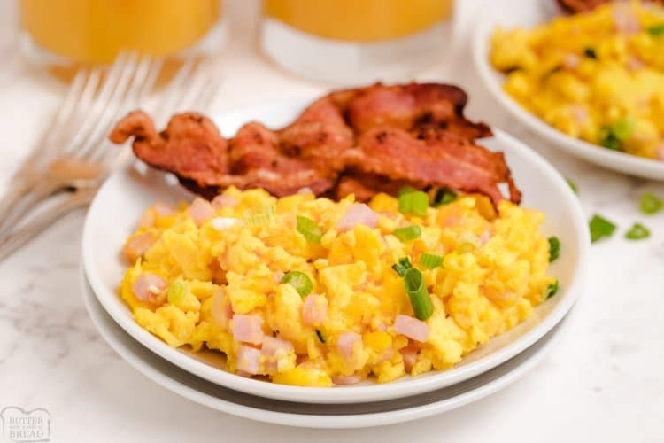

Scrambled eggs with ham and cheese
Back to main

Best breakfast you can have. Fluffy and delicious!
Ingredients:
- 6 eggs.
- 100ml of milk
- 3 ham slices.
- 2 tsbp parmesan cheese
- 3 toasted bread slices.
- Chopped scallions.
Steps:
- Crack the eggs, and mix thoroughly with the milk and parmesan cheese.
- Add salt and pepper to taste.
- Cut you ham into little squares, then add them to the egg mix and stir again.
- Add a splash of olive oil to a pan, then add and cook your egg mix.
- Cook until your eggs are firm and a little moist, don't let them to completely dry.
- Finally, serve your eggs and add scallions to taste.
- Serve your eggs with the toasts and that's it... Enjoy the best breakfast you ever had!
Back to main